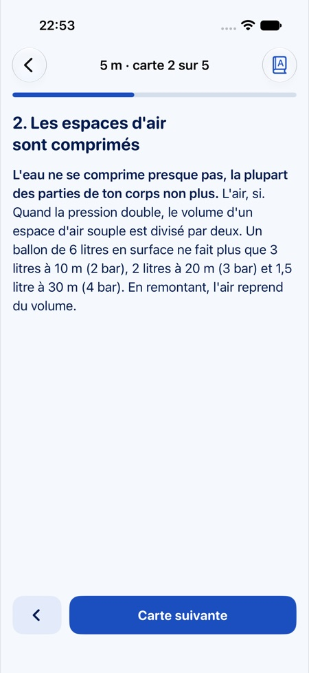
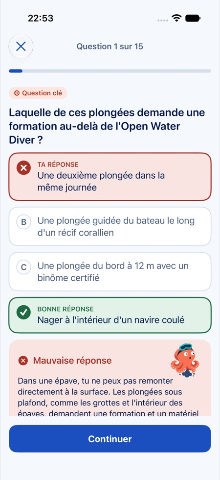
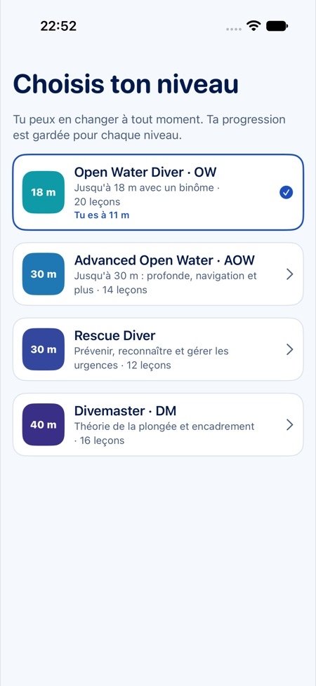
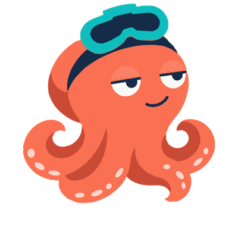
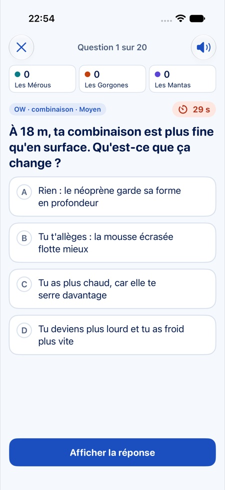

Comment ça marche
Chaque niveau est découpé en leçons de 3 à 6 minutes, suivies d’un quiz corrigé de six questions. Les questions ratées reviennent dans la révision du jour, puis à intervalles de plus en plus longs.
Leçons courtes
Une idée clé, quelques fiches et trois points à retenir, avec des schémas pour la pression, la consommation d’air, les pressions partielles et le profil de plongée.
Des quiz qui expliquent
La bonne réponse, pourquoi, et la fiche à relire. Les questions de sécurité sont signalées et reviennent plus souvent.
Mètres ou pieds
Mètres et bars, ou pieds et psi. Octo prend les unités de ta région et tu peux en changer à tout moment.
De l’Open Water au Divemaster
62 leçons, 372 questions et 130 mises en situation d’examen. Les leçons couvrent les thèmes des cursus PADI Open Water Diver, Advanced Open Water, Rescue Diver et Divemaster. Elles ont été écrites pour Octo à partir des programmes publics et de références de sécurité en plongée, et vérifiées sur des sources publiques ; elles n’ont pas encore été relues par un instructeur.



Ce que tu révises
Open Water Diver
Le matériel et la vérification avec ton binôme, la pression et l’équilibrage, la flottabilité et le lestage, la consommation d’air, le palier de sécurité, la panne d’air, l’accident de décompression et la narcose, les ordinateurs et les limites de non-décompression, le plan de plongée et l’avion après la plongée.
Advanced Open Water
La plongée profonde et la narcose, la navigation au compas et aux repères naturels, la flottabilité et l’assiette, les plongées de nuit, sur épave, dérivantes et du bateau, le nitrox, la recherche et le relevage, la combinaison étanche.
Rescue Diver
Se sauver soi-même, le stress et la panique, le plongeur fatigué ou paniqué en surface, le plongeur disparu, le plongeur inconscient, les insufflations dans l’eau, la sortie de l’eau, les premiers secours et l’oxygène, le plan d’urgence.
Divemaster
La physique de la plongée (lois de Boyle-Mariotte, Charles, Dalton et Henry, principe d’Archimède), la physiologie et la théorie de la décompression, l’équipement, le briefing, l’encadrement de plongeurs certifiés, l’assistance en formation, la cartographie d’un site et la gestion des risques.

Voici Octo
Une pieuvre au masque relevé sur la tête. Calme pendant que tu apprends, curieuse quand tu ne sais pas, un petit nuage d’encre quand tu te trompes, et des flammes dans les yeux pour un sans-faute.
Le Méga Quiz, pour les soirées du club Octo Pro
300 questions de l’Open Water au Divemaster, plus la vie marine, les sites de plongée et l’histoire de la plongée. 1 à 4 équipes, 10, 20 ou 30 questions, chrono de 30 secondes au choix. Affiche la question sur la télé du club, révèle la réponse et coche les équipes qui l’ont trouvée ; Octo compte les points et affiche le podium. Inclus dans Octo Pro.

Questions fréquentes
Octo est-elle une app officielle PADI ?
Non. Octo est une app indépendante, ni affiliée à PADI, ni approuvée par PADI. Elle ne remplace ni ton instructeur ni ta formation dans l’eau : en cas de doute, c’est la consigne de ton instructeur qui compte.
Que couvre Octo ?
La théorie de quatre cursus : Open Water Diver, Advanced Open Water, Rescue Diver et Divemaster. 62 leçons, 372 questions de quiz, 130 mises en situation d’examen et un Méga Quiz de 300 questions, en mètres et bars ou en pieds et psi.
Faut-il un compte ?
Non. Ta progression reste sur ton iPhone, sans compte ni serveur.
Octo est-elle gratuite ?
Oui : leçons, quiz, révisions et examens blancs sont gratuits, avec un bandeau publicitaire qui n’apparaît jamais pendant une question. Octo Pro (achat unique) ajoute le Méga Quiz et retire toute publicité.
En quelles langues ?
Français et anglais. Octo suit la langue de ton iPhone.